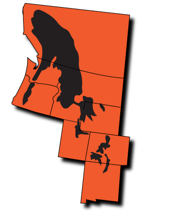

CONSERVATION STATUS

WHERE IN N. AMERICA

FOLIAGE
ABOUT THE WHITE SPRUCE
The White Spruce, Picea engelmannii, is native to western North America, and is mostly a high altitude mountain tree, growing at 3,000 feet. They can grow up to 130 feet tall, with a trunk diameter of 5 feet. The White Spruce is commonly harvested for paper-making and construction! It is also used as a Christmas tree!